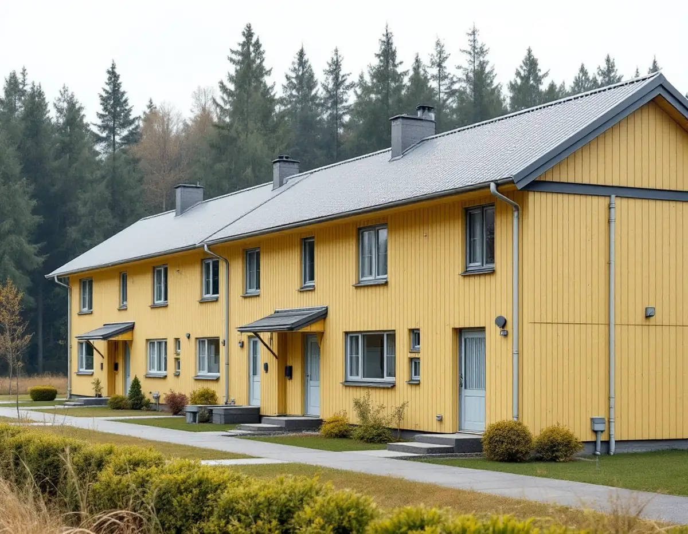
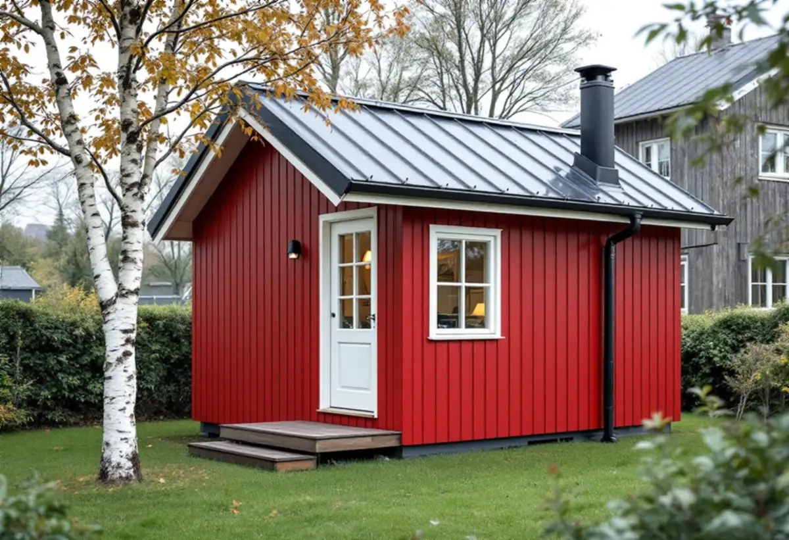

Vattnets väg
Vi ser var varje stuprör slutar och om vattnet rinner mot grannen, uppfarten eller en grönyta.
I Botkyrka finns drygt 12 500 bostäder i småhus enligt SCB. Det vatten som rinner av taken är fastighetsägarens ansvar ända tills det har lämnat tomten, och i stora delar av kommunen ligger tomten dessutom i ett vattenskyddsområde. Geal Entreprenad AB byter hängrännor, stuprör och beslag och lägger plåttak på villor och radhus i Botkyrka, med gratis platsbesök och skriftligt kostnadsförslag.

Botkyrka kommun beskriver dagvatten som regn- och smältvatten från tak, vägar och parkeringsplatser, och skriver att vattnet i första hand ska hanteras så nära källan som möjligt. Den som äger fastigheten har ett ansvar för att dagvattnet från den egna tomten inte påverkar närliggande fastigheter.
Kommunen har en strategi och riktlinjer för dagvatten som riktar sig till alla fastighetsägare. Enligt kommunens folder finns 14 dagvattendammar i Botkyrka, där vattnet renas innan det når sjöarna, men vid extremväder hinner vattnet inte stanna i dammarna och belastningen på ledningarna ökar. Åtgärder som fördröjer vattnet är därför viktiga, skriver kommunen.
För plåtslagaren börjar frågan vid stupröret. En ränna som rinner över vid kraftigt regn, ett stuprör som slutar mot grannens tomtgräns eller en utkastare som leder vattnet mot en hårdgjord uppfart skickar vattnet åt fel håll. Vid platsbesöket följer vi vattnet från takfoten till marken och föreslår var det kan ledas ut på gräs eller rabatt. Allmänt om rännor finns under hängrännor och stuprör.

Botkyrka har sex vattenskyddsområden: Tullinge, Segersjö, Östra Mälaren, Bornsjön, Pålamalm och ett på Näslandet. Kommunen skriver att de största är Tullinge och Segersjö samt Östra Mälarens vattenskyddsområde, som omfattar stora delar av norra Botkyrka. Inom dessa är det särskilt viktigt att förorenat dagvatten hanteras så att yt- och grundvatten inte påverkas.
Vill du leda stuprören till en stenkista eller ett magasin i marken spelar läget roll. Kommunen skriver att mindre grävningsarbeten på tomten är tillåtna, men att större schaktarbeten inom vattenskyddsområdet kräver tillstånd från miljö- och hälsoskyddsnämnden, som är tillståndsmyndighet för Tullinge och Segersjö. För de övriga områdena hänvisar kommunen till Länsstyrelsen respektive SYVAB.
Ska en ny dagvattenanläggning inrättas inom detaljplanelagt område ska den enligt kommunen anmälas, och exempel på en sådan anläggning är en damm, ett anlagt dike eller en dagvattenledning. Vi lägger rännor och stuprör och ser till att vattnet kommer rätt ut från huset. Grävning och anläggning i marken planeras med dig, och vi kontrollerar först om fastigheten ligger i ett skyddsområde.
Enligt kommunens riktlinjer gäller vid ny- och ombyggnad som ökar byggnadsarean att allt vatten från hårdgjorda ytor på kvartersmark ska ledas till lokala dagvattenanläggningar som kan fördröja de första 20 millimetrarna regn. Ett nytt tak är en sådan hårdgjord yta, även om det är litet.
För en komplementbostad eller ett attefallshus skriver kommunens VA-enhet att dag- och dräneringsvatten inte får kopplas till kommunens spillvattenledning. Den nya spillvattenledningen ska kopplas på befintlig spillvattenledning inom tomten, men vattnet från stugans tak ska alltså ta en annan väg. Bygger du om en befintlig komplementbyggnad ska du enligt kommunen kontakta VA-enheten.
En liten stuga med plåttak får ofta en egen ränna med ett stuprör på ena sidan. Vi placerar stupröret där vattnet kan ledas ut på gräs, långt från både stugans och huvudbyggnadens grund, och väljer ränndimension efter takytan. Läs mer om stommen och lovreglerna på sidan om attefallshus.
På kommunens energisida står att solcellspaneler och solfångare inte kräver bygglov, även om byggnadens utseende påverkas avsevärt, förutsatt att de följer byggnadens form. Enligt kommunens bygglovssidor är undantagen om detaljplanen kräver lov, om byggnaden eller området är särskilt värdefullt från historisk eller kulturhistorisk synpunkt eller om fastigheten ligger i ett område av betydelse för totalförsvaret. Berör anläggningen bärande konstruktion eller brandskydd krävs anmälan. Kommunen påpekar själv att delar av bygglovsinformationen kan vara inaktuell efter lagändringarna den 1 december 2025.
Ett falsat plåttak passar bra för solceller, eftersom fästena kan klämmas på falsen utan att plåten genomborras. Är plåten gammal är det klokt att byta den först, så att panelerna inte behöver demonteras när taket ska läggas om. Mer om plåttak i allmänhet finns under plåttak, och om takets skick under takrenovering i Botkyrka.
Vi ser var varje stuprör slutar och om vattnet rinner mot grannen, uppfarten eller en grönyta.
Vi kontrollerar om tomten ligger i ett vattenskyddsområde innan något grävs.
Rännor, stuprör, plåttak och eventuella solcellsfästen redovisas som egna poster.
Gammal plåt tas ner, underlaget kontrolleras och ny plåt monteras med rätt fall.
Vid genomgången visar vi var vattnet leds ut och hur rännorna hålls rena.
I ett småhus ger det rotavdrag att reparera, rengöra eller byta ut plåttak, hängrännor och stuprör, och att montera ställning i samband med arbetet. Avdraget är 30 procent av arbetskostnaden, högst 50 000 kr per person och år och högst 75 000 kr för rot och rut sammanlagt.
Bor du i bostadsrätt ger byte av plåttak, hängrännor och stuprör inget rotavdrag enligt Skatteverket. Material ger inget avdrag. Geal drar avdraget direkt på fakturan.
Takytan, hur många stuprör och ränndalar huset har, om plåttaket byts helt eller bara rännor och beslag, vilken ställning som behövs och om en gäststuga eller tillbyggnad ska få egen avvattning. Efter ett gratis platsbesök får du ett skriftligt kostnadsförslag.
Plåttak, hängrännor och beslag.
Plåtslagare i Stockholm →Takbyte, takbesiktning och plåtarbeten.
Takläggare i Botkyrka →Tullinge, Uttran och Tumba.
Takrenovering i Botkyrka →Kartlagren, checklistan och vattnet.
Attefallshus i Botkyrka →Flytt av badrum, stammar och frånluft.
Badrumsrenovering i Botkyrka →Nytt hus, utfart och byggarbetsplats.
Byggföretag i Botkyrka →Fönstertyper per epok i Botkyrkas villor.
Fönsterbyte i Botkyrka →Kataloghus, källargolv och trägolv.
Golvläggare i Botkyrka →Kök i villor och radhus, för att bo kvar.
Köksrenovering i Botkyrka →Tidstypiska kulörer från 1960-tal till gamla byar.
Målare i Botkyrka →Altan, plank och förråd i villaområdena vid järnvägen.
Snickare i Botkyrka →Material, solpaneler och takkupor.
Takbyte i Botkyrka →Ny tapet på träfiberskivor och gamla lager.
Tapetsering i Botkyrka →